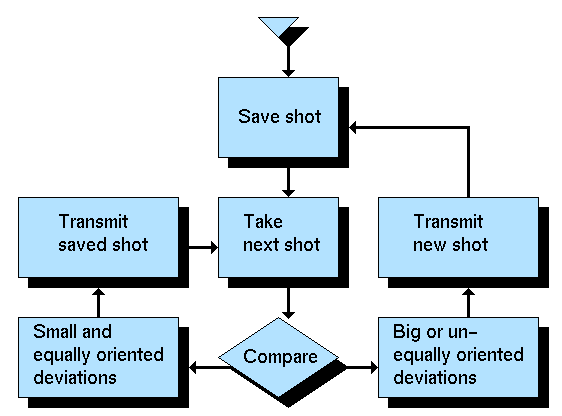

[  ] [
] [  ] [
] [  ]
]
Приложения нечеткой логики
(продолжение)
Пример: Камкодер со стабилизатором изображения, Matsushita
Основные функции:
-
Сохранение моментального кадра
-
Деление картинки на 4 части по 30 точек в каждой. Сохранение сигналов от
этих точек
-
Получение следующего кадра и сравнение
-
Сравнение сигналов от нового кадра с сигналами сохраненного
-
Стабилизация или обновление соответственно
-
Если имеются небольшие равно ориентированные отклонения (=
вибрации), тогда передать сохраненный кадр.
-
Если имеются большие (= предполагаемые) или не равно ориентированные
отклонения (= движенния), тогда передать и сохранить новый кадр.
Блок-схема:

[
] [
] [
]